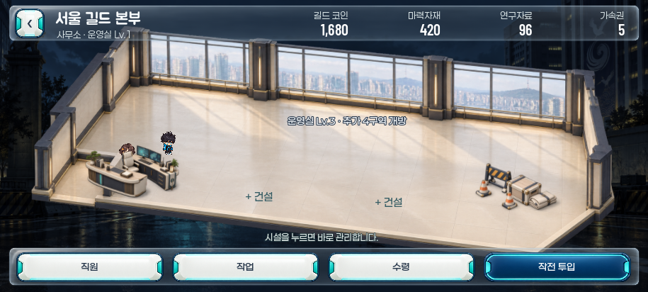

2.5D 길드 본부
넓은 실내 공간 안에 독립된 시설을 배치하고, SD 각성자가 걸어 다니며 건설·경영하는 길드 시안입니다. 밝은 아이보리·목재와 네이비·청록 소재를 사용합니다.

이 화면의 캡처를 준비하고 있습니다.
이미지가 추가되면 갤러리를 다시 열어 주세요.
이미지가 추가되면 갤러리를 다시 열어 주세요.
초기 길드 본부 · 915×412
독립 시안
현재 게임과 분리한 Godot 시안 프로젝트입니다. 미리보기의 건설·직원·생산 변경은 사용자 프로필과 출동 저장에 기록하지 않습니다.
승인 전 화면
이번 2.5D 배치는 아직 승인되지 않았습니다. 승인 후 현재 워크트리 게임에 연결하며, 현재 게임의 길드와 저장은 그대로 유지합니다.
직접 확인: 탐색기에서 Preview-Guild-2p5D.cmd를 더블클릭하세요. 같은 폴더의 독립 Godot 프로젝트로도 열 수 있습니다.
화면 캡처는 시각 배치 확인용이며 실제 플레이·터치 실기기 QA를 대신하지 않습니다. 게임 UI의 기능 텍스트는 네이티브 텍스트로 표시하고, 시설과 공간은 래스터 PNG를 사용합니다.